Le TDD dans la vraie vie avec Panther
$ whoami -a
Avertissement :
Toute ressemblance avec du code de production existant ou ayant existé ne serait être que fortuite.
Jour 1
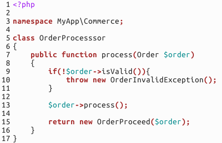
😁
… Jour 13
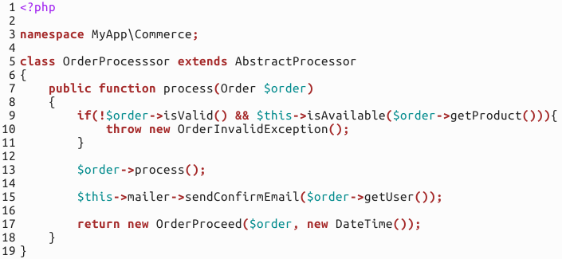
… Jour 13
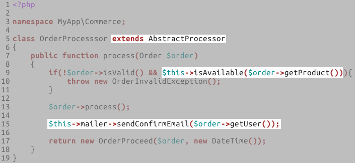
😨
… Jour 42
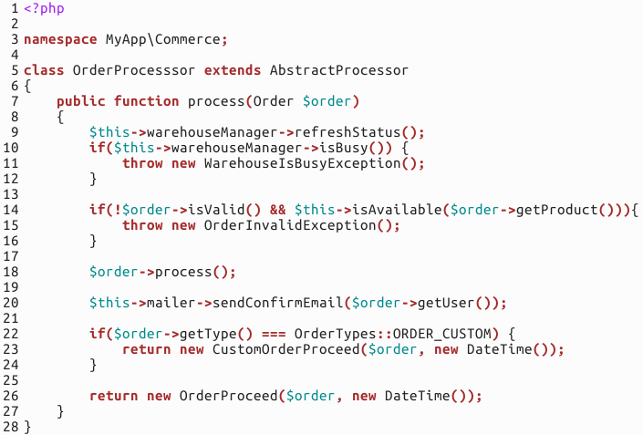
… Jour 42
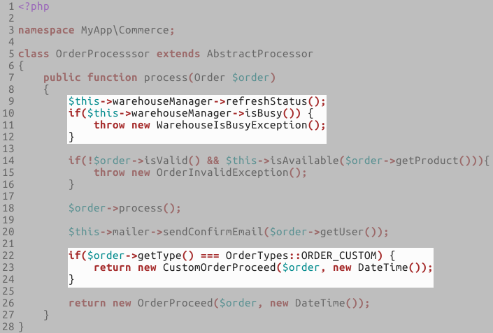
😭
Sujets abordés :
- Le TDD ? Quoi, pourquoi, comment ?
- A wild Panther appears !
- Live coding
The Broken Windows Theory
Nettoyer la rue pour réduire le crime
“Code rots !”
Sans tests
- Chaque modification est un bug potentiel.
- Le coût des évolutions est en hausse.
- La satisfaction client diminue.

😥
Rapport de la qualité de la couverture de tests sur le niveau de flexibilité du code
Avec une couverture de tests…
Le code source de notre application devient
flexible.
Avec une couverture de tests…
Les développeurs n’ont plus la crainte de casser le système à chaque incrément.
👍
Autres avantages
- Pas de tests manuels, répétitifs et ennuyeux.
- Pas d’oublis ou erreurs de manipulation.
- Montées de versions facilitées.
La métaphore du chirurgien
Développement dirigé par les tests
Les 3 lois du TDD
N°1 : Vous ne devez pas écrire de code de production tant que vous n’avez pas un test en erreur.
Les 3 lois du TDD
N°2 : Vous ne devez pas écrire plus de lignes de test qu’il n’en faut pour qu’un test soit en erreur.
Les 3 lois du TDD
N°3 : Vous ne devez pas écrire plus de code de production qu’il n’en faut pour que le test passe.
Red
❗
Green
✅
Refactor 👷
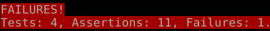
La meilleure façon …
- de respecter les principes SOLID.
- d’assurer l’exhaustivité de la couverture.
- d’avoir du code testable.
- d’assurer la satisfaction client.
Problème :
Comment limiter les coûts de maintenance de la suite de tests ?
Tests unitaires
Tests d’intégration
Tests de bout-en-bout
La pyramide de tests
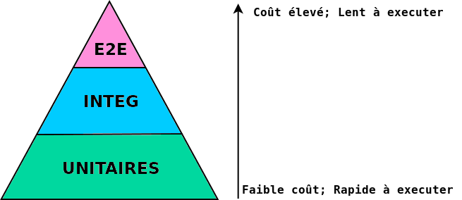
Un outil pour chaque usage, et un usage par outil
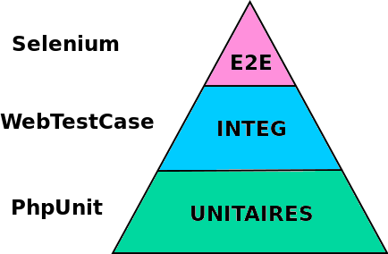
Des tests oui, mais à quel prix ?
Compatible avec la norme WebDriver du W3C.
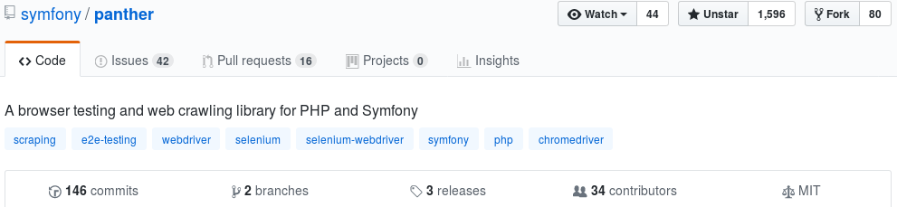
Dépendance sur le paquet facebook/webdriver
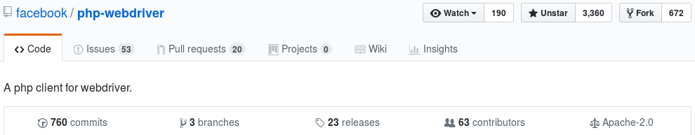
“Nouveau” ? Pas tant que ça…
KernelTestCase
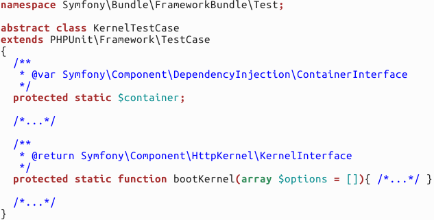
KernelTestCase
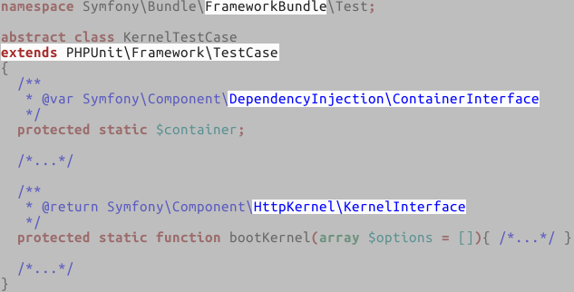
WebTestCase
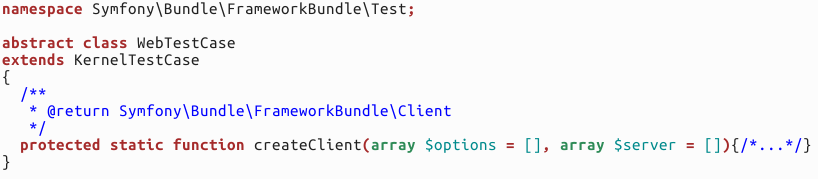
WebTestCase
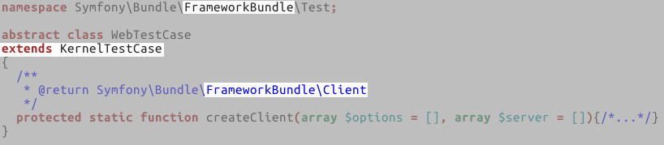
PantherTestCase
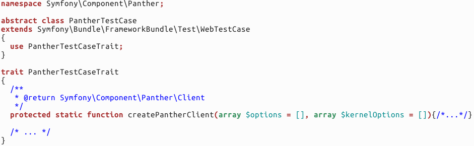
PantherTestCase
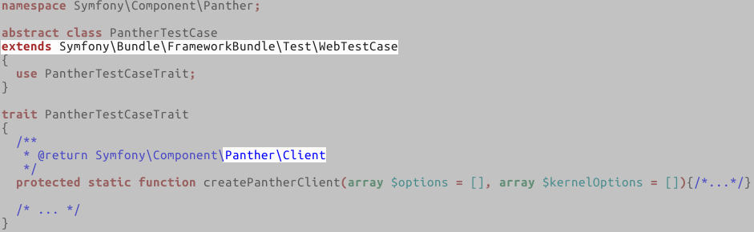
De nombreuses fonctionnalités
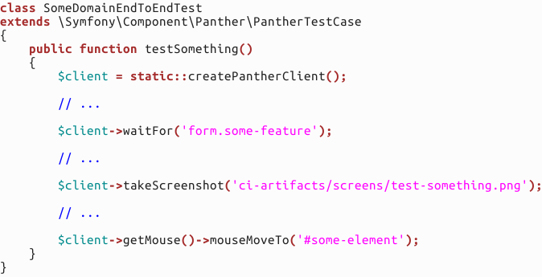
De nombreuses fonctionnalités
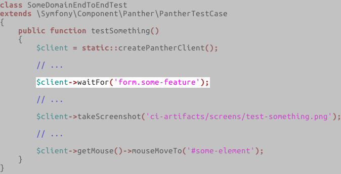
De nombreuses fonctionnalités
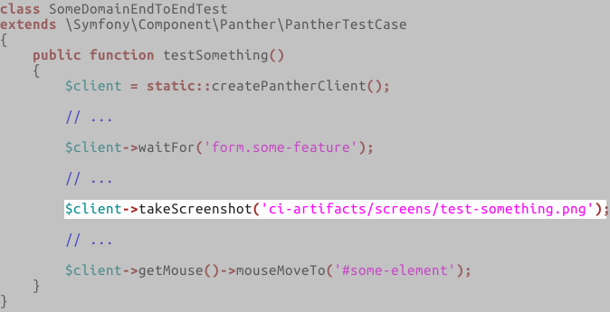
De nombreuses fonctionnalités
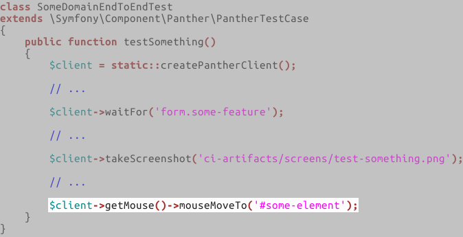
Plug and play !
Live Coding
#1: Critiques de l’année en cours
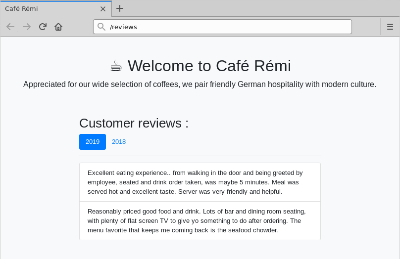
#1: Critiques de l’année en cours
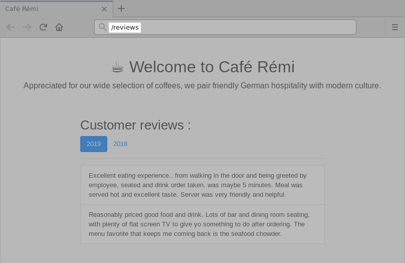
#1: Critiques de l’année en cours
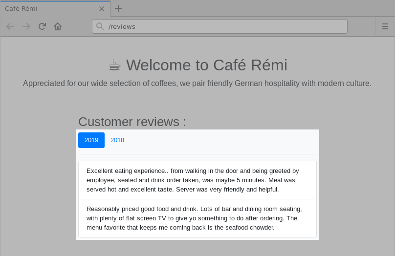
#2: Critiques de l’année passée
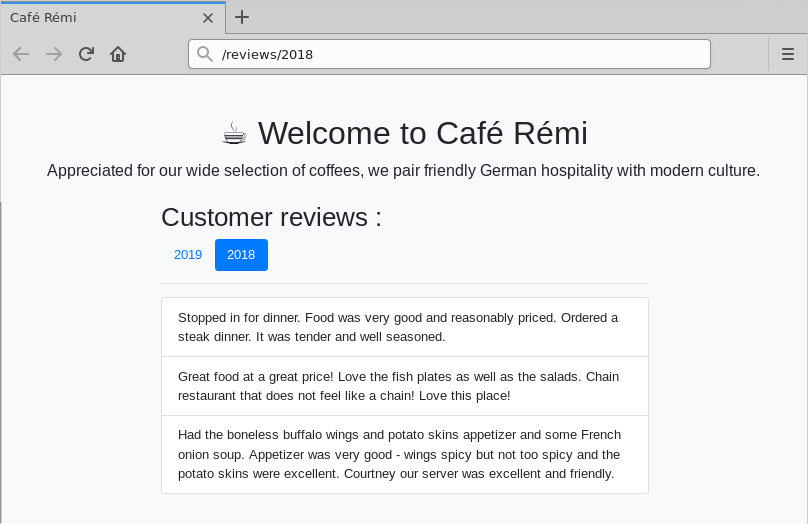
#2: Critiques de l’année passée
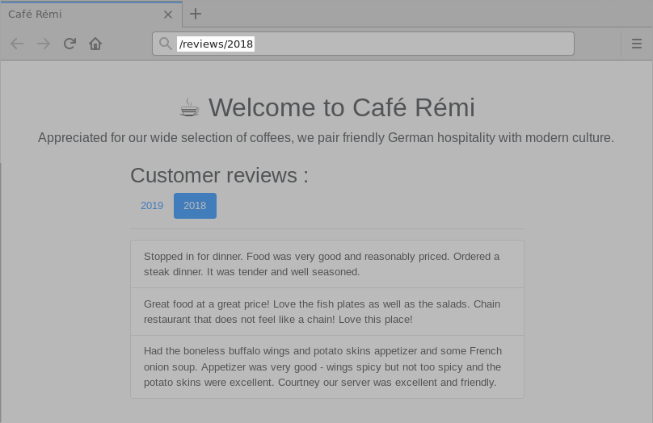
#2: Critiques de l’année passée
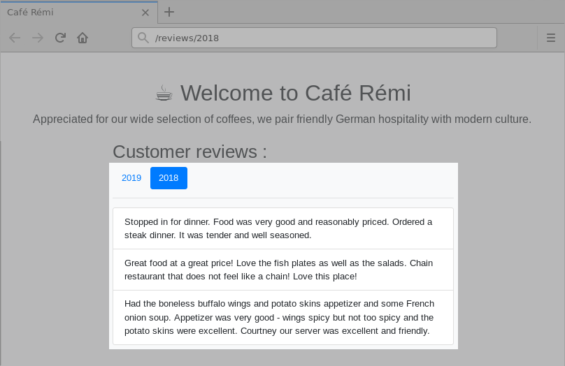
#3: Changer l’année sans rechargement
#3: Changer l’année sans rechargement
Pour aller plus loin 🚀
Quelques conseils pour améliorer la qualité de votre suite de tests
- Allez droit au but
- Evitez les structures imbriquées
- Evitez les expressions complexes
- Pas d’abréviation
- Soyez explicite, la lisibilité est primordiale
Suivez le principe F.I.R.S.T.
Fast
Independent
Repeatable
Self-validating
Timely
Jouez vos tests dans un SAAS !
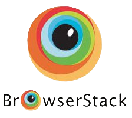